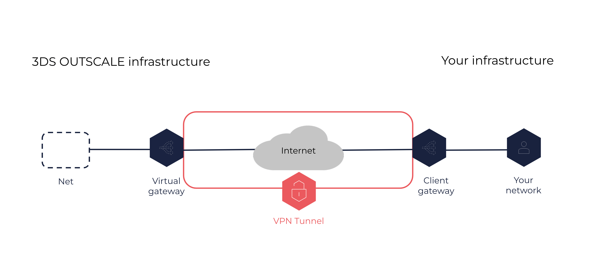

About VPN Connections
A VPN connection is a secure connection between your corporate network and one of your Nets in the OUTSCALE Cloud. Resources on each side can communicate with one another.
General Information
A VPN connection is composed of the following elements:
-
A client gateway, on your side of the connection. This resource is located in your corporate network, and can be either hardware or software. For more information, see About Client Gateways.
-
A virtual gateway, on the OUTSCALE side of the connection. This resource is attached to one of your Nets. For more information, see About Virtual Gateways.
-
A VPN tunnel connecting the client gateway and the virtual gateway securely through the internet.

The protocol used for the encryption of the VPN tunnel is Internet Protocol security (IPsec).
After you create a VPN connection, the VPN tunnel becomes active only when traffic is generated from your side of the connection. That is, your client gateway must initiate the tunnel. The virtual gateway does not initiate it. For more information, see the Lifecycle section below.
To ensure redundancy and high-availability, you can create several VPN connections between your network and a single Net.
|
You can also set up a physical secure connection between your corporate network and a Net using DirectLink. For more information, see About DirectLink. |
|
A VPN connection does not provide access to the internet. To access the internet from the Net, you need to add an internet service. For more information, see Tutorial: Setting Up a Direct Connection Between VMs in a Net and the Internet. You can also associate the internet service with a NAT service. For more information, see About NAT Services. |
Lifecycle
A VPN connection can be in one of the following states:
-
Pending: The creation process is in progress. The VPN connection remains in the pending state until traffic is generated from the client gateway.
-
Available: The VPN connection is created and ready to use.
-
Deleting: The deletion process is in progress.
-
Deleted: The VPN connection is deleted. To connect your corporate network and the Net again, you must create a new VPN connection.
Deleted resources remain visible for 1 hour.
Additionally, when the VPN connection is in the available state, the VPN tunnel can be in one the following states:
-
Up: The tunnel is active and receives traffic between the client gateway and the virtual gateway.
-
Down: The tunnel is not active. There is no traffic between the client gateway and the virtual gateway. This happens when the VPN connection is not properly configured, or after some idle time depending on the configuration. For more information, see Tutorial: Setting Up a VPN Connection.
Network Configuration
To allow traffic between both sides of the VPN connection, you need to configure the following resources:
-
On your side of the connection, the firewall of the client gateway. You must open the appropriate ports to allow flows from the virtual gateway.
-
On the OUTSCALE side of the connection, the security groups associated with the VMs in the Net. You must add the appropriate rules allowing outbound and inbound flows to and from your corporate network.
For more information, see Tutorial: Setting Up a VPN Connection.
Related Pages